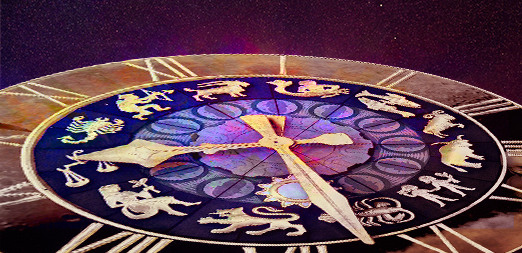

- Consult Now
-
Helpline No 88 1000 2000
-
 Notifications
Notifications
No notifications for you

Shagun Vichar is a science that enables you to understand if the day ahead will be auspicious or inauspicious for you. Get specific details about auspicious events that are likely to happen in your life if you make the right choices as per the alignment of stars. This will help you achieve success in your personal as well as your professional life. When you make sound choices, life takes a turn for the better and you are able to experience all aspects of a healthy and happy life. What should you do to avoid such pitfalls that can ruin your mood as well as your life. Shagun Vichar will dwell upon these aspects and help you find clarity about where you need to go and sound choices that you need to make. The stars are not always in your favour and it is during times like these when you need to be careful and take precautions to have a wonderful day ahead. Get insights on how you can make the most of opportunities that await you. Find out what will be the best things to do on a particular day and the reasons behind these predictions meant just for you.